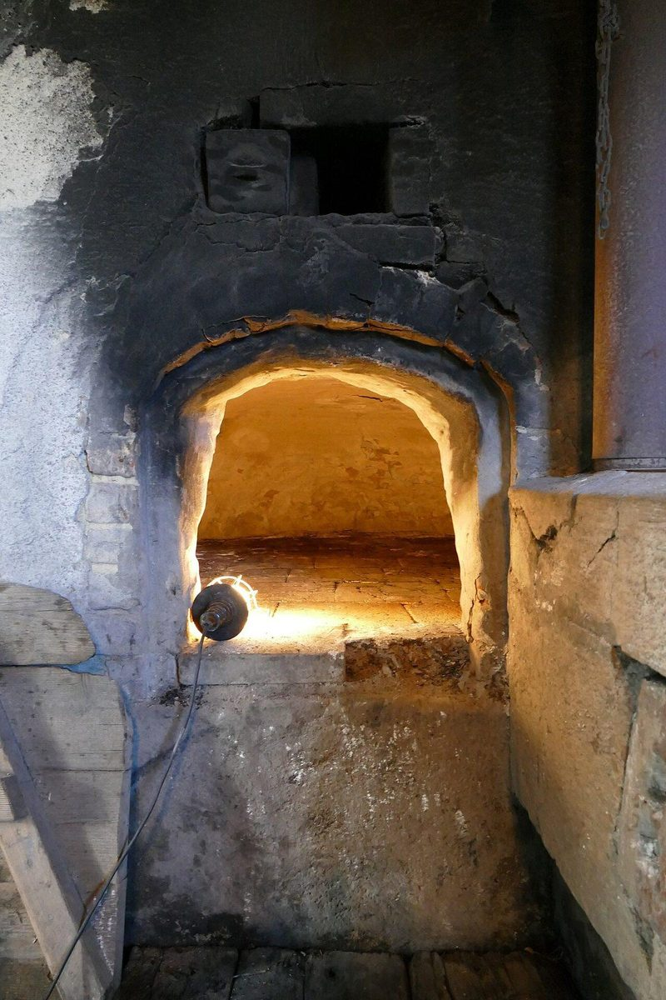
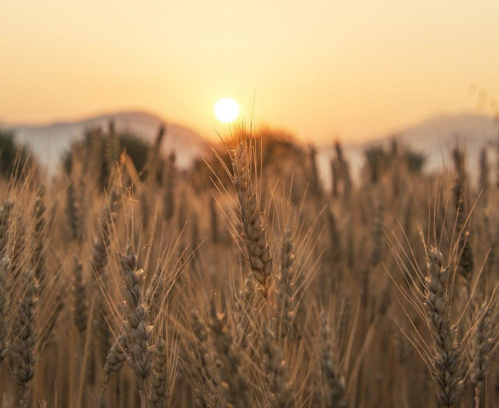
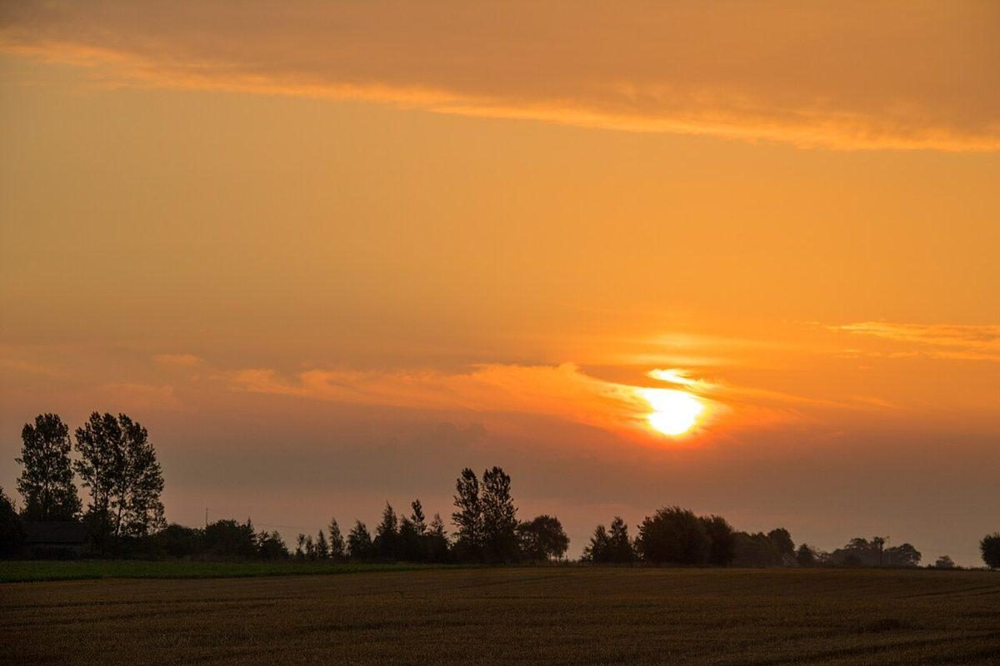
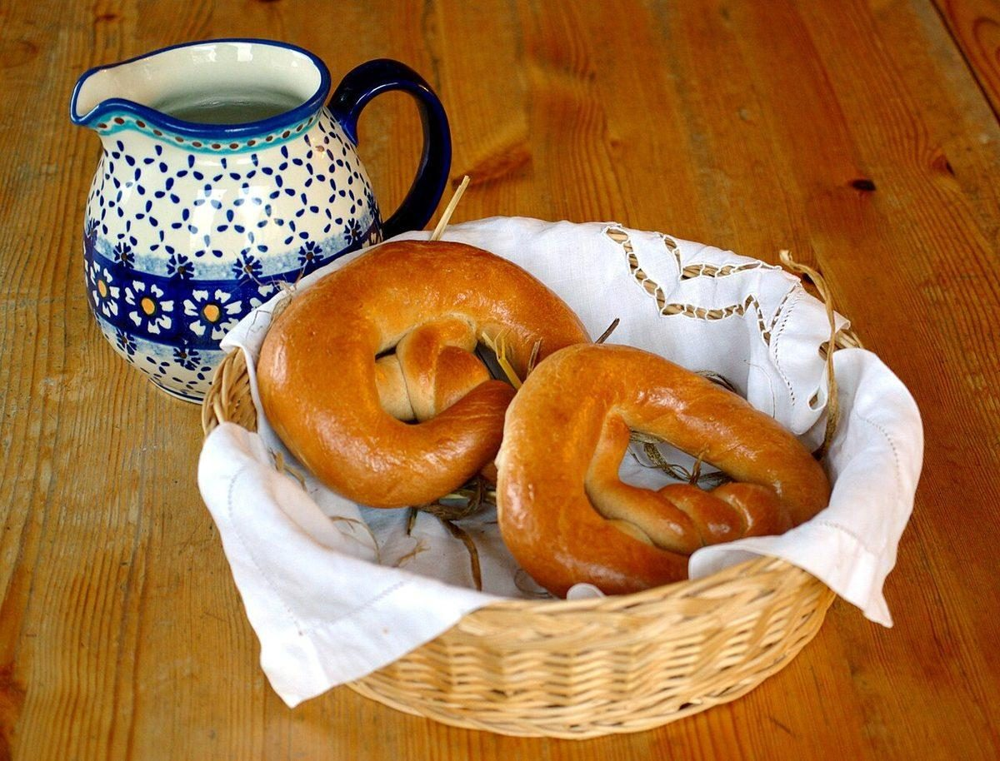

店のこと
店のこと
お店について確認できているのは、所在地とInstagramのアカウントだけです。
確認できていること(黒マーカー)
- 店名は「ホワイトベーカリー」、業種はパン屋
- 所在地は山口県長門市仙崎985-6(〒759-4106)
- 電話番号はなし。連絡はInstagramから
- 営業時間・定休日・メニュー・価格・ご予約・駐車場は準備中
右の写真は国外または撮影地不明のフリー素材で、仙崎やお店のものではありません。

想像してみる
白板に書くなら、こんな一行。
ここは制作側が想像して書いた部分です。お店の考え・商品・実際の様子とは関係がありません。
屋号の「ホワイト」からは、白いボードのほかに、粉をふったパンの表面や、まっさらな朝の気配も思い浮かびます。ただ、名前の由来は分かりません。ボードの端に小さく「今日のお知らせ」と書くような気持ちで、確認できたことだけを並べました。



まだ書けないこと
白いまま残しておく場所
パンの種類、価格、営業日などは、確認できていないので何も書いていません。お店からお預かりした情報で、あとから書き込みます。